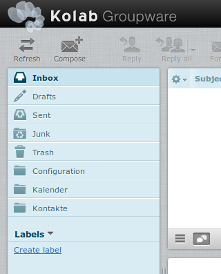
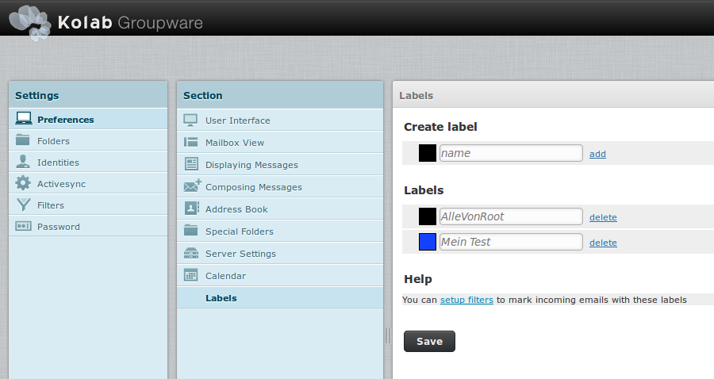
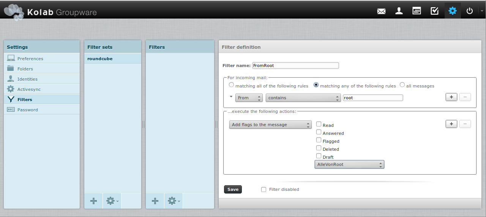
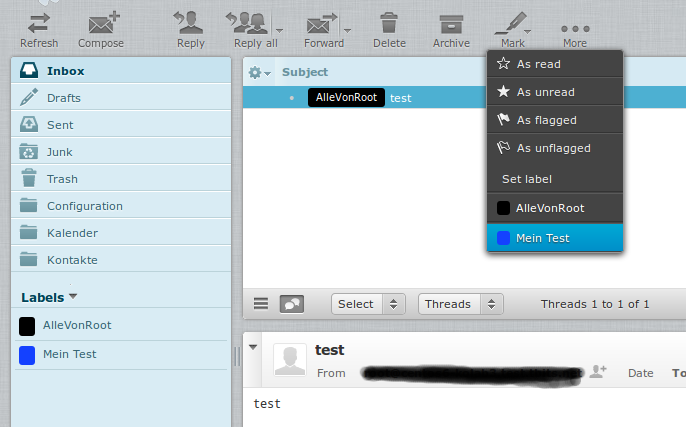

Instructions message_label
Create first label:

Edit labels:

Create a filter that sets the label when the email comes in:

Note: need to set the w flag for the user in Cyrus for this to work:
cyradm --user cyrus-admin localhost
setacl user/max.mustermann@example.org max^mustermann@example.org w
Manually assign labels:

You can either use the Mark drop down menu, or drag the message to the label folder on the left side.
For removing a label from a message, you can just click the label in the message list.